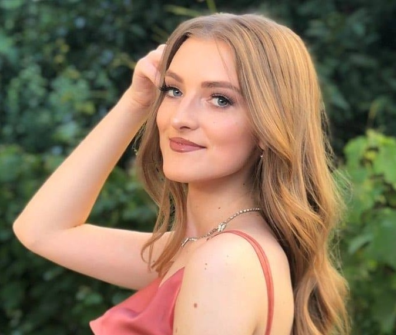

I am 20 years old and a first-year student at the Faculty of Information Sciences and Computer Engineering. I was born in Kočani, and because of my interest in information sciences, I started studying in Skopje. As a student, I don't have a lot of work experience yet.

I am a dedicated and ambitious person who always strives to perform his duties in a timely manner. I can easily adapt to a new environment and I don't mind working under pressure. I like meeting new people and accepting challenges, and therefore I consider myself a competitive person in any sphere of life. I consider my communication and ability to adapt in any field to be my strong point. I have ambitions for deepening my competences in order to grow into a successful person.
I completed my primary education at the OU "St. Cyril and Methodius", while I finished high school at "Ljupcho Santov" - high school. In secondary education, I encountered subjects in the field of informatics and computer science, which gave me even greater ambitions to continue achieving my imagined goals, and that's why I chose this particular faculty, which I am at now. I am currently a first-year student at the Faculty of Information Sciences and Computer Engineering in Skopje, majoring in Application of Information Technologies. I think I made a good choice in choosing this faculty. I am satisfied with the teaching and the subjects we have studied so far. I think they are quite useful and would help us further in life and career. I have just finished my first year and I have positive impressions from the teaching so far and I hope that the next three years will be productive for me, thanks to the chosen subjects and the learning method.
I like to spend my free time with one of my hobbies. One of my hobbies is running a news and music platform. This hobby fulfills me and when I spend time on this platform I consider that my time is well spent. The very correlation between my college and my hobby makes me a more competitive person for what I have to do in the near future. We improve my vocabulary by reading free literature that is available to me both physically and online. I also often spend my time doing sports. Sports is also one of my hobbies, which gives me positive energy to successfully carry out my duties professionally. I often walk, ride a bike, run, and with that I consider that I spend my free time productively.